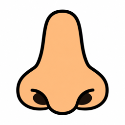

¿Respira por la boca?
Respirar por la nariz calienta y limpia el aire. Si un niño respira casi siempre por la boca, suele haber algo que tapa la nariz y conviene mirarlo. Tres minutos para saber qué observar y a quién acudir.
Marca lo que ves en casa
Toca las que pasan casi todos los días. Mejor si lo miras también mientras duerme.
No se guarda en ningún sitio: solo vale mientras tienes abierta esta página.
El camino: quién hace qué
Gira las tres cartas. Suele ir en este orden.
¿Verdadero o falso?
Ya sabes qué mirar
Si alguien de tu entorno lo necesita, pásale esta página.
De dónde sale esto
La Academia Americana de Pediatría recomienda preguntar a todos los niños si roncan, y estudiar a los que roncan y tienen otras señales. Cuando la causa son unas vegetaciones o amígdalas grandes, la primera opción es operarlas. Marcus y col., Pediatrics 2012. doi:10.1542/peds.2012-1671
Respirar por la boca se asocia a más placa y sangrado de encías (revisión sistemática de Kimura y col., 2025). doi:10.1111/ipd.70022
Esta página es informativa y no sustituye la consulta con el pediatra, el otorrino, el dentista o la logopeda.
Gabinete Fönia · ColmenIA
Hacemos materiales como este entre logopedas, maestros y familias.